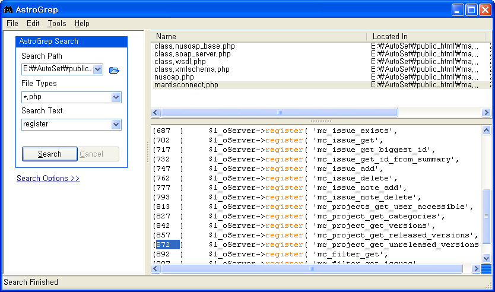
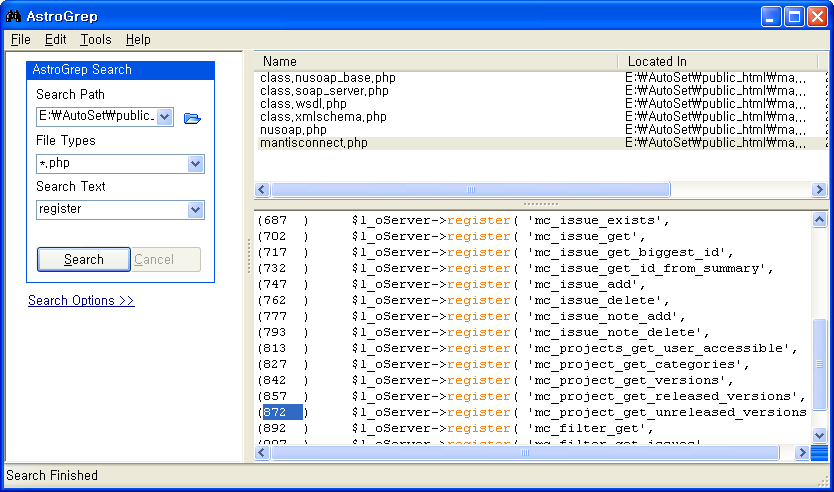

PHP 프로그램을 분석하면서, Windows 탐색기의 기본 검색 기능이 너무 형편 없길래 이래저래 찾아보다가 Astro Grep이라는 파일 내의 텍스트 검색 도구를 찾았다.
Unix의 유명한 명령어인 "grep"의 윈도우 GUI 판인데, 사실 C#으로 만들어졌고리눅스의 mono에서도 작동한다고 한다.리눅스의 모노로 포팅이 쉽게 만들었다고 한다. 그리고 당연히 윈도우에서도 .Net Framework가 깔려 있어야 한다.
디렉토리를 지정하고, 검색에 포함시킬 파일 확장자와 검색어를 지정하면 해당 디렉토리 이하의 모든 지정된 파일에서 텍스트를 검색하고 파일명과 각 파일의 어느 줄에서 검색어가 나오는지를 보여준다.

검색 결과에서 해당 줄을 클릭하면 파일 편집기에서 파일을 열고 해당파일줄로 이동하게 설정할 수 있다.
VIM의 경우에는 Tools->Options->Text Editors 에서 "*"에 해당하는 항목을 편집하여 Vim 실행파일을 지정하고, 다음 옵션을 주도록 하면 된다.
그리고서 검색 결과로 나온 내용을 더블 클릭하면 된다.
Unix의 유명한 명령어인 "grep"의 윈도우 GUI 판인데, 사실 C#으로 만들어졌고
디렉토리를 지정하고, 검색에 포함시킬 파일 확장자와 검색어를 지정하면 해당 디렉토리 이하의 모든 지정된 파일에서 텍스트를 검색하고 파일명과 각 파일의 어느 줄에서 검색어가 나오는지를 보여준다.

검색 결과에서 해당 줄을 클릭하면 파일 편집기에서 파일을 열고 해당
VIM의 경우에는 Tools->Options->Text Editors 에서 "*"에 해당하는 항목을 편집하여 Vim 실행파일을 지정하고, 다음 옵션을 주도록 하면 된다.
%1 +%2
그리고서 검색 결과로 나온 내용을 더블 클릭하면 된다.